Uma breve recordação de momentos especiais que mostram um pouco do que é ser feliz ao seu lado. Dedico todo o meu esforço de colocar em prática esse sitezinho ao nosso amor, que inspira e motiva minha melhor versão todos os dias. É muito gostoso lembrar de como é bom ser amada por você.
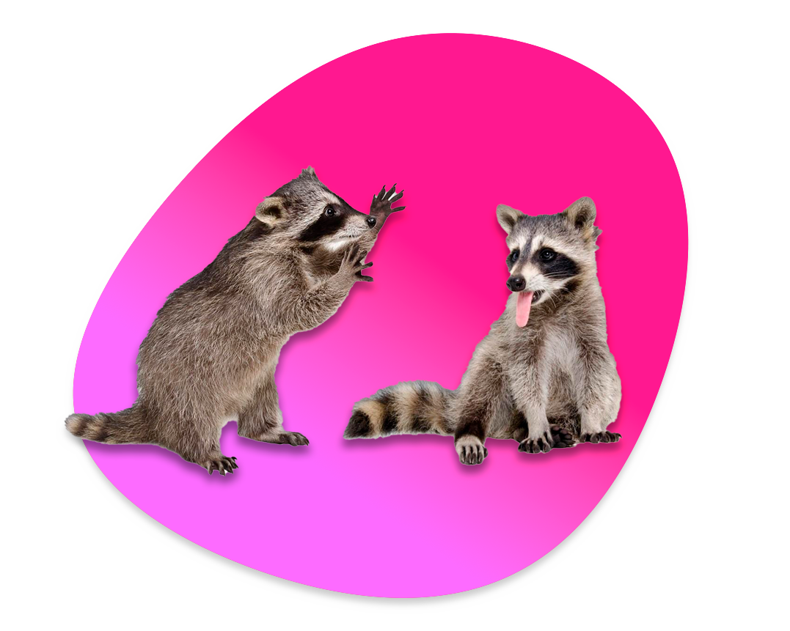
Um pouquinho do meu processo...
Eu fiz um vídeo mostrando cada passo do meu processo criando o site. Pode não estar perfeito mas eu fiz com todo o carinho do mundo!
No começo foi bem complicado mas eu consegui pegar jeito e fazer com que criar o site fosse uma coisa divertida pra mim.
Foi uma experiência muito legal e eu fiquei muito feliz com o resultado, espero que você também goste :)
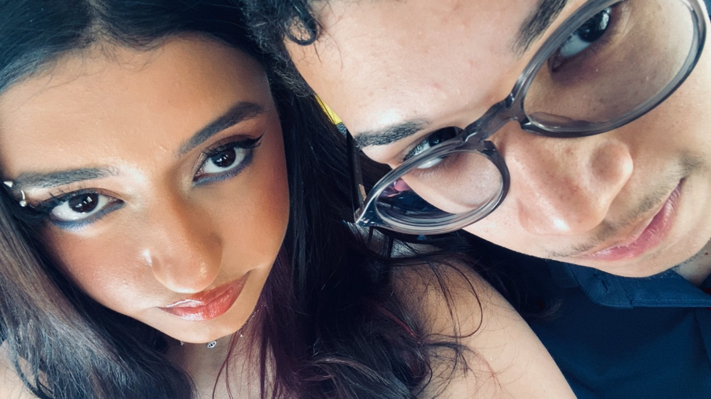
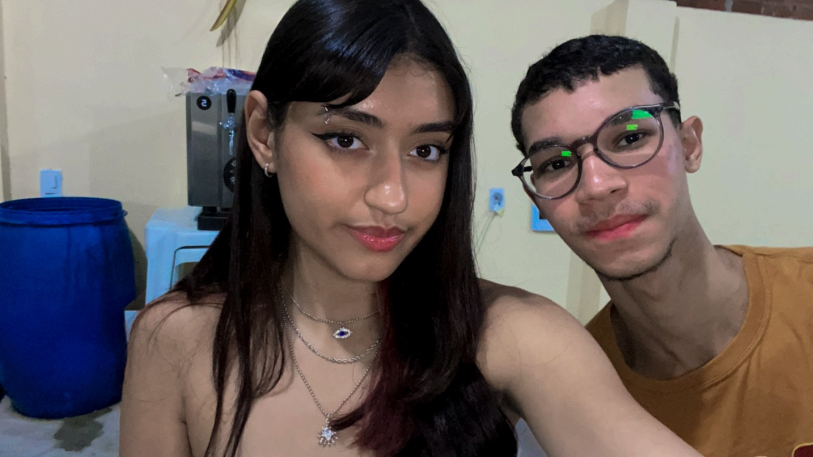
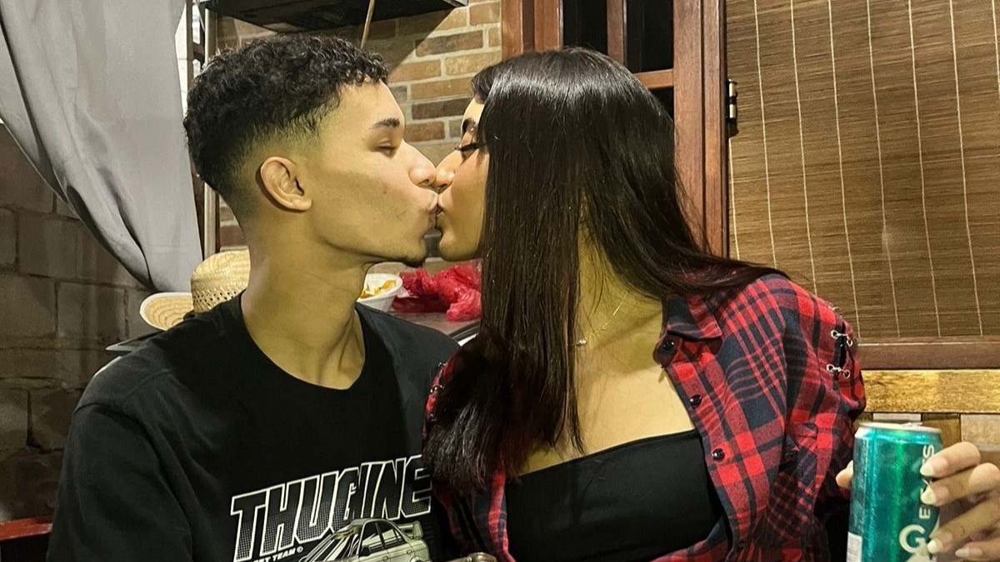
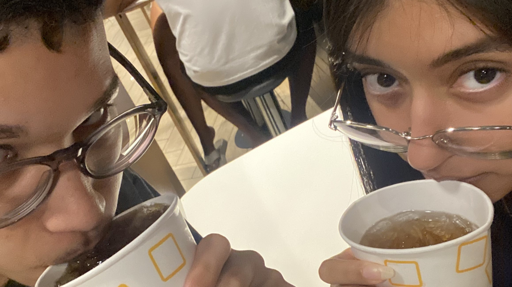
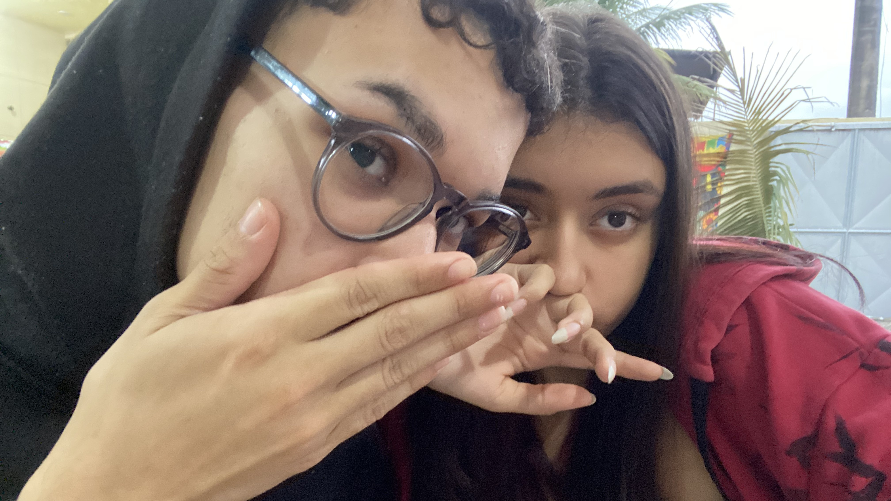
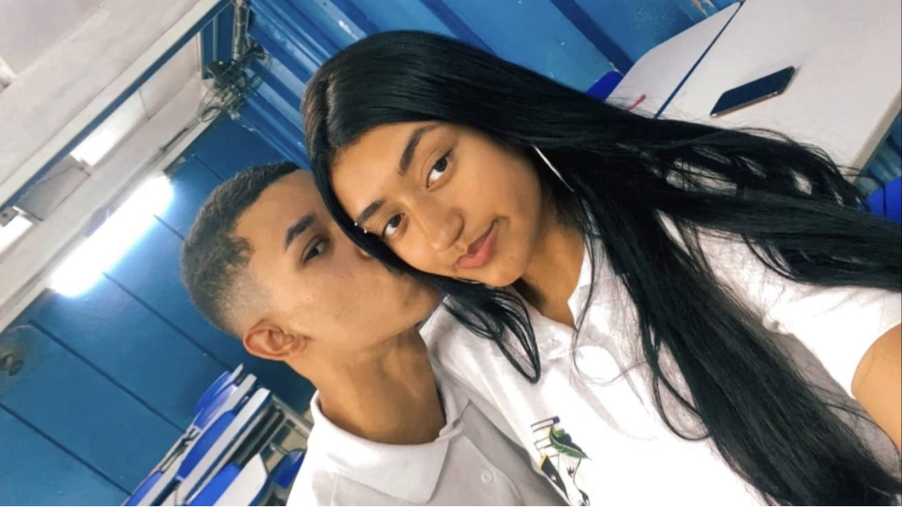
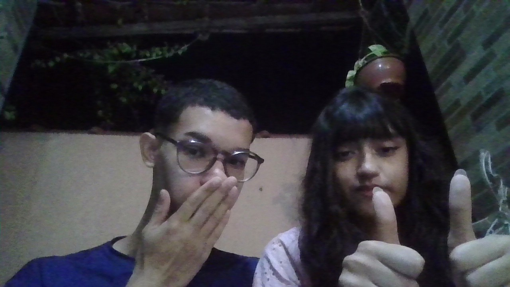
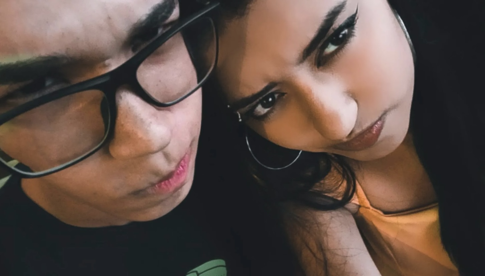
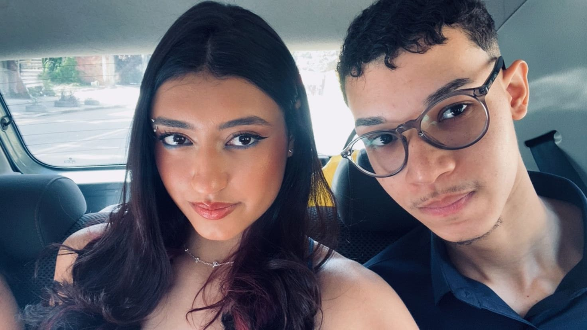
Conhece esse casal?
É o casal mais lindo do mundo, sabia?
se não, olha só essas fotos! cada dia por trás delas foram dias bons graças a você. É assim que funciona, você faz minha vida mais feliz. Essas são algumas das minhas fotos favoritas, pra mim, são as melhores fotos do mundo.
Tentei achar algumas fotos nossas mais antigas mas não encontrei quase nenhuma, a gente tirava poucas fotos a um tempo atrás :/
Tem alguém querendo falar contigo...
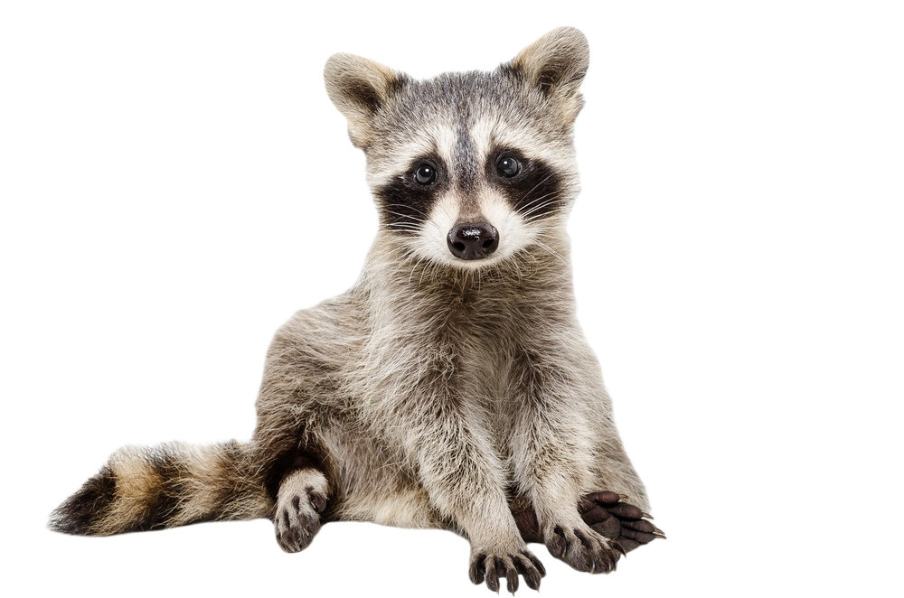
Sei que sou apenas um guaxinim, mas acredita em mim... conversei com alguém que parece gostar muito de você, ela pediu pra falar bem assim contigo ó: "Parece clichê mas eu soube que era pra ser assim que te conheci. Nada é por acaso, não é? E mesmo por saber, ainda me sinto sortuda de te encontrar. Nunca fui tão devota por alguém na minha vida inteira, mas agora tenho a chance de amar intensamente e a certeza de que sou amada de volta. Eu passaria de novo por todas as loucuras e confusões desses últimos dois anos se fosse preciso, porque sei que tudo vale a pena pra estar contigo. Eu te amo muito, Luquinhas."